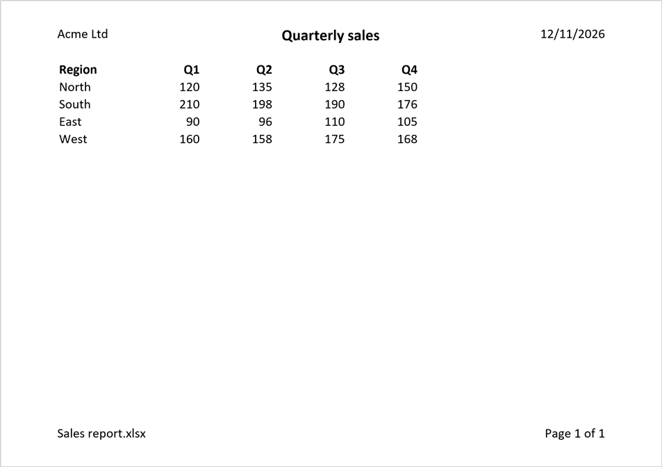

Printing
Setting up a sheet for printing changes the workbook, so open the file with mode="rw" (or start from XLSX.newxlsx). The settings can be read from any file.
XLSX.setPageSetup sets the orientation, paper size and scaling, as Excel's Page Setup dialog does:
XLSX.setPageSetup(sheet; orientation=:landscape, paperSize=:A4)
XLSX.setPageSetup(sheet; fitToWidth=1) # one page wide, as many pages tall as needed
XLSX.setPageSetup(sheet; scale=75) # or print at 75%The margins are set in inches, and print options choose whether gridlines and row and column headings are printed, and whether the sheet is centred on the page:
XLSX.setPageMargins(sheet; left=0.5, right=0.5, top=0.75, bottom=0.75)
XLSX.setPrintOptions(sheet; gridLines=true, horizontalCentered=true)A print area limits what is printed, and print titles repeat rows at the top of each page, or columns at its left:
XLSX.setPrintArea(sheet, "A1:H60")
XLSX.setPrintTitles(sheet; rows=1) # repeat the header row on every page
XLSX.setPrintTitles(sheet; rows=1:2, cols="A")Excel keeps these two as names scoped to the sheet, _xlnm.Print_Area and _xlnm.Print_Titles, which are kept up to date as sheets are renamed, copied and deleted.
Each setting can be read back with XLSX.getPageSetup, XLSX.getPageMargins, XLSX.getPrintOptions, XLSX.getPrintArea and XLSX.getPrintTitles, and the print area and titles removed with XLSX.removePrintArea and XLSX.removePrintTitles.
Headers and footers
XLSX.setHeaderFooter sets the header and footer printed on every page, as Excel's Page Setup → Header/Footer does. Each has a left, a centre and a right section; a single string is centred:
julia> s = XLSX.newxlsx()[1];
julia> XLSX.setHeaderFooter(s; header=(left="Sales", right="Page &P of &N"), footer="&F");
julia> XLSX.getHeaderFooter(s).header
(left = "Sales", center = nothing, right = "Page &P of &N")Excel replaces codes such as &P (the page number) and &N (the number of pages) when it prints. XLSX.headerFooterField gives them by name, and XLSX.headerFooterFont gives the codes that change the font of the text after them:
julia> title = XLSX.headerFooterFont(bold=true, size=14) * "Quarterly report"
"&\"-,Bold\"&14Quarterly report"
julia> XLSX.setHeaderFooter(s; header=(center=title,), footer=(right=XLSX.headerFooterField(:sheet),));| Code | Printed as | | Code | Printed as | |:—–|:———–|:-|:—–|:———–| | &P | page number | | &F | file name | | &N | number of pages | | &Z | file's folder | | &D | date | | &A | sheet name | | &T | time | | && | an ampersand, & |
This page was printed from a sheet set up with:
XLSX.setHeaderFooter(sheet;
header=(left="Acme Ltd", center=XLSX.headerFooterFont(bold=true, size=14) * "Quarterly sales", right="&D"),
footer=(left="&F", right="Page &P of &N"))
The first page, and even pages, can have headers and footers of their own:
XLSX.setHeaderFooter(sheet; firstHeader="") # nothing above the title page
XLSX.setHeaderFooter(sheet; footer=(right="&P",), evenFooter=(left="&P",)) # page numbers on the outside edgeA new header or footer replaces the old one whole, and "" removes it; XLSX.removeHeaderFooter removes them all. A header or footer holds at most 255 characters, codes included, as in Excel. Pictures in headers and footers aren't supported. XLSX.setPageMargins sets how far they are from the edge of the page.
See also
- API: Page setup and printing in Files and worksheets
- Related guides: Freeze and split panes, which keep header rows in view on screen as print titles do on paper